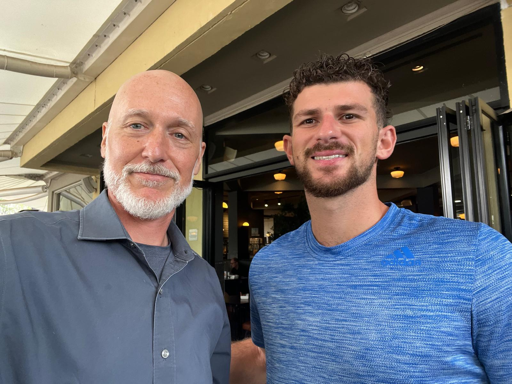

Saturday November 2nd 2024, Nairobi, Kenya
I haven’t given my first impressions on Africa, let me do that. They drive on the left side of the road which is interesting. Everything is pretty cheap except the touristy experiences. Nairobi is not the cleanest city. It is hot and dirty. The people seem nice but there is definitely some looks you get as a muzungu, white person. Everyone speaks really good English here, way better than Israel and Georgia. The people also speak Swahili which is cool. You do see poverty and people begging in the streets. A lot of people are selling random shit like white boards, flashlights, hats, just to make some money. I really like it so far all things considered though! Nairobi is one of the most developed cities, but it is still less developed than I expected. Today I tried ostrich meatballs which was pretty yummy and interesting at The Carnivore Restaurant. I had a traditional East African dish called Ugali, see the food page for details. Tomorrow I wake up early and head to Tanzania for a 5 day Serengeti safari. Hopefully crossing the border goes smoothly. Ron will meet up with us in Tanzania tomorrow for a week and a half! That’ll be fun. Still processing all that information from yesterday wow!

Friday November 1st 2024, Nairobi, Kenya
I slept terribly. I woke up twice to the sound of the call to prayer. There is a mosque next door to the hostel. There was some road noise as well. I went to meet up with my mom’s friend from high school Erik, who currently lives in Nairobi early in the morning at the Village Market. Erik started and runs a nonprofit called “Enabling Peace in Iraq Center (EPIC)”. We had an amazing two hour conversation all about geopolitics, government, and traveling. The amount of information he blasted me with was insane, I was actually overwhelmed. Here are some key highlights. Kenya has a huge population, about 56 million, made up of more than 40 distinct tribes. Nairobi is a bubble in Kenya due to the UN presence here bringing rich expats in. There are two economies in Nairobi, one that serves the expats with nice shopping and restaurants and the economy for the rest of Kenyans. People are coming to Nairobi for tech and opportunity. Labor is exploited heavily in Kenya. I took a 45 minute uber for 10 dollars. A 15 minute trip is like 3 bucks. He said Ethiopia is beautiful and has lots of potential after the civil war. Uganda is stable but has the worst government. Rwanda has fake stability from the dictator in power there even though he does a lot of good. Iraq’s biggest problem is Iran presence in the region. He said I could come to Kurdistan with him sometime. We talked about business in the fields of agriculture, energy, tourism. He told me that Kenya has enough food here at home but they import most of their goods due to government incompetence. Everybody here is on “Africa time”, people show up late and are not in a rush, it taught him how to slow down. He gave me a book about how to think about economics in a sustainable way. Overall he was super cool and super smart, I learned so much from him. After meeting up with him Zach and I roamed the city and went to a fruit market. Zach has not been feeling well the past couple days so I went to the Nairobi Hebrew Congregation for Shabbat services myself. I met the Rabbi Netaniel there who is super cool and a young guy. I told him my trip outline and he tore it apart and redesigned the trip for me. He has travelled all over the world and met over 1000 backpackers so he is very knowledgeable in how to get the most out of the experience. He advised to explore countries fully and slowly before moving to the next place. Do not just hop around to check a country off your list. He told me a month in Uganda is a must, which I previously overlooked. Since we are only in Nairobi for three days he said we should come back and do Kenya properly this trip. The synagogue was beautiful and on a huge plot of land with great nature. I met some expats living there in Nairobi too. Overall this day was filled with an overwhelming amount of intimation I am still processing. Today was the ay I realized I had to switch to a backpackers mindset. The past 6 weeks had been nice exploring business and chilling in Israel/ Georgia but now the true backpacking adventure starts. Especially in Africa it takes a lot more planning to make sure you stay safe and hit the good spots efficiently. Also he advised to minimize border hopping between countries because it’s a long process. Explore a country fully then move on.
